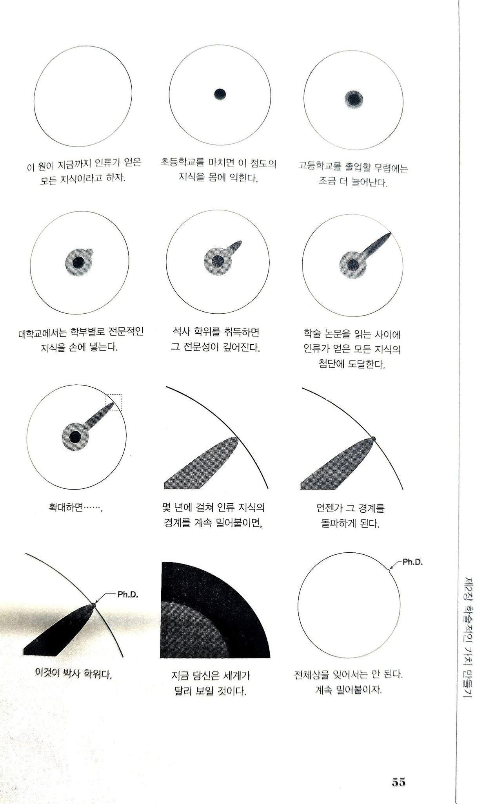

약간 유두같기도 하고

약간 유두같기도 하고
그러니까 함몰 유두였다가 박사따면 유두가 튀어나온다는거지?
아흥
우리 나라는 저 조금 튀어 나온걸 존나 하찮게 여김.
여성학 박사 : 그치 맞지
여성학에 '학'자를 붙이는거 자체가 문제인듯
여성학 같은걸 학문으로 생각한다는거 자체가 학문에 필요한 최소한의 자질을 가지지 못했다는 증거임.
여성학이니 자질갖지못하는게맞지
하지만 세상엔 드물게도 자질가진 여성이 존재하였으니!
세간에선 그런 여성을 두려움과 경외를 담아서 후타 라고 불렀다
과학쪽은 저런거같긴 한데 예술 음악 박사학위 이런건 존나 병신임
과학과 비과학은 아주 큰 차이가 있는듯 ㅋㅋ
“여성학 박사”
ㄹㅇㅋㅋ 예체능 학위는 오히려 실력없는 2류들 같음. 당장 예체능은 실제 필드에서 증명을 할 수있는데 연구니 뭐니 하는건 결국 도태되었다는 뜻이니까
내가 그쪽 분야는 아니긴 한데 너무 잔인한 소리 아니냐 ㅋㅋㅋㅋㅋㅋㅋ
아니 이게 뭔소리여.... 예체능이 뭔 운동선수, 예술가만 있는줄 아눙? 화성학, 음악사 부터 교육, 이론, 기획, 비평 등등 학술적으로 정말 넓고 깊은 분야야.
그러니까 그 학문들이 진정으로 필요에 의해 생겼겠냐는거임. 플레이어(화가든 축구선수든 연주자든)가 되고 싶었지만 역량이 부족한 사람들이 관련된 영역에서 종사하기 위해 추구한 차선의 집적일 가능성이 더 크잖아?
보이는것만 믿는건지
아님 내꺼외엔 관심이 없는건지
관심이 업서
위에 뽀로리님 말 대로 좆빠지는 분야는 많은데 사실상 체육과 음악을 보면 수요와 공급이 스타성과 빵댕이와 실력과 찌찌와 둔부와 기럭지와 한국 유로 리그 진출이 뉴스거리에 있음.
모 강사께서 용접 지이이잉이라 말한 것처럼 자신이 모르는 분야는 국대 인터뷰에서 아무리 '마사지 때문에 담이 잘 풀려서 최고의 컨디션을 유지할 수 있었다, 우리를 도와주는 모든 분들께 항상 감사한다' 말해봐도 바로 다음에 광고 나오는 폐경기 영양제 홈쇼핑보다 관심이 업서
이게 무슨 소리야;;;;;
그 증명이 연구실에서 나오는거야
프리미어리그, 올림픽 같은 곳에서 최고들과 경쟁하는 것 보다 대학교에서 이론, 전술 떠드는게 더 현실적이고 설득력있다는 소리임?
윗댓보니까 연구자를 플레이어의 아래로 보는것 같은데 운동잘하는거랑 머리잘쓰는건 별개임
나도 플레이어로 활동하는 중이지만 네 의견에는 전혀 동의할수없음
그리고 너 예체능 아니구나? 예체능이면 이런생각 자체가 불가능할텐데
지금 도파민님은 일부를 전체로 확대해서 생각해서 그런거야....당장 예시로 든 운동만해도 운동생리학, 운동역학, 코칭, 경영, 마케팅, 의학까지 수십가지 이론분야가 있어....6070년대 한국, 일본 스포츠는 유망한 선수들 장애인 만드는일이 흔했어. 4번타자 왕종훈 같이 훈련시켰거든. 이러면 메시가 환생해도 국대한번 못밟고 어린이 축구교실 코치하고있을수도 있는거야. 그리고 애초에 축구박사, 야구박사, K팝 박사 이런건 없어....
잘 모르는 분야에 대해 갑자기 확신을 갖고 그걸 강변하는건 진짜 웃긴거야
박사는 성감대가 발달한다 메모
박사 정도만 돼도 전체 인류의 지식 상위 1%는 될 건데.. 근데도 전체 원해 비해 한없이 작게 묘사한 게 확실히 이거 그린 사람(아마 박사겠지)이 통찰력이 있는 사람이구나 싶음
저 흰색 부분에 해병문학이라던가 후타나리라던가 오메가버스같은것도 있으니까
모든지식에서 새로운 발견같은거면 저거 조금튀어나온것도 어마어마하게 과장된거일듯 ㅋㅋ
무르익어가는 과정
우매함의 봉우리는 ㄹㅇ이다
인류지식의 여드름
저런! 대학원생들이 원의 크기를 넓히는 동안 저 원이 통째로 월 $20에 스마트폰 속으로 들어갔네요!
슬프지만 현실
gpt가 발전해도, 결국 논문 보고 학습하는 정도 밖에 안됨.
경계 안에서는 굉장히 잘하지만, 경계 밖에서는 박사들이 갈려나는거임
llm이 경계 밖으로도 나갈 수 있다면, 특이점이 온거니까 이제 인간이 설 자리는 없으니까 박사들도 기뻐할 것.
수학 난제 풀면 경계 밀어내는거 아님?
인터넷 처음나왔을때도 그런소리 나왔었음
뭐야 내 박위 그림표현 어딨음
정일영 교수님 대단한 분이셨구나
저 짤 대학원생들한테 엄청 위로되더라고. 주변 친구들은 졸업하고 뭔가 생산적인 일을 하는데 자기는 정체되어 있는거 같으니까...

두루미 성장과정